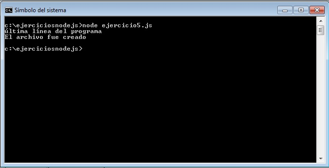
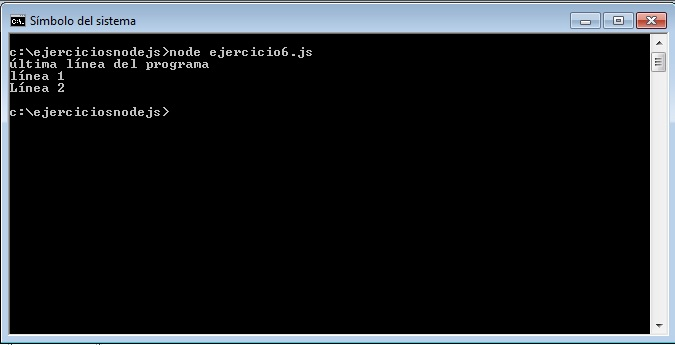

Ya sabemos como crear un módulo mínimo, como consumirlo a dicho módulo y también como consumir módulos que vienen por defecto en Node.js.
Ahora veremos un segundo módulo que viene implementado en Node.js por defecto y nos permite acceder al sistema de archivos para poder leer sus contenidos y crear otros archivos o carpetas.
Tenemos que poner mucho cuidado en entender el concepto de programación asincrónica que propone la plataforma de Node.js
La programación asincrónica busca no detener la ejecución del programa en forma completa por actividades que requieren mucho tiempo (una analogía es imaginar que nuestro entorno Node.js es un "mozo de restaurante" que va a una mesa y toma el pedido y lo envía a la cocina, la eleboración del pedido toma su tiempo pero el mozo no se queda congelado hasta que la cocina le avisa que el pedido está preparado sino que sigue tomando pedidos en otras mesas)
El módulo de administración de archivos "fs" implementa la programación asincrónica para procesar su creación, lectura, modificación, borrado etc.
Creemos un archivo llamado ejercicio5.js:
var fs=require('fs');
fs.writeFile('./archivo1.txt','línea 1\nLínea 2',function(error){
if (error)
console.log(error);
else
console.log('El archivo fue creado');
});
console.log('última línea del programa');
Es importante tener en cuenta que cuando ejecutamos este programa aparece en pantalla primero el mensaje:
última línea del programa
antes que:
El archivo fue creado

Expliquemos como funciona el código de este programa, primero requerimos el módulo 'fs':
var fs=require('fs');
Llamamos a la función writeFile a través de la variable fs. Esta función tiene tres parámetros:
La programación asincrónica podemos ver que sucede al mostrar el mensaje 'última línea del programa' antes de informarnos que el archivo fue creado. Es decir que cuando llamamos a la función writeFile el programa no se detiene en esta línea hasta que el archivo se crea sino que continúa con las siguientes instrucciones.
En este programita en particular no tiene grandes ventajas utilizar la programación asíncrona ya que luego de llamar a la función writeFile solo procedemos a mostrar un mensaje por la consola, pero en otras circunstancias podríamos estar ejecutando más actividades que no dependieran de la creación de dicho archivo (por ejemplo ordenando un vector en memoria)
Creemos un archivo llamado ejercicio6.js:
var fs=require('fs');
fs.readFile('./archivo1.txt',function(error,datos){
if (error) {
console.log(error);
}
else {
console.log(datos.toString());
}
});
console.log('última línea del programa');
El resultado de ejecutar este programa es:

Tenemos en pantalla la impresión de las dos líneas del archivo de texto. El módulo 'fs' tiene una función llamada readFile que le pasamos como primer parámetro el nombre del archivo a leer y como segundo parámetro una función anónima que se ejecutará cuando se termine de leer el archivo pasando como parámetros un objeto con la referencia del error si lo hubiera y un objeto de tipo Buffer con todos los datos del archivo de texto.
Para mostrar el contenido del Buffer en formato texto llamamos al método toString(). Si no hacemos esto en pantalla mostrará los valores numéricos de los caracteres.
Nuevamente estamos implementando la lectura de un archivo en forma asincrónica, con el objeto de no detener el hilo de nuestro programa (esto es muy útil si el archivo a leer es de gran tamaño)
El empleo de funciones anónimas en JavaScript es muy común pero podemos volver a codificar el problema anterior pasando el nombre de una función:
Modificamos el archivo ejercicio6.js eliminando la función anónima e implementando una función con un nombre explícito:
var fs=require('fs');
function leer(error,datos){
if (error) {
console.log(error);
}
else {
console.log(datos.toString());
}
}
fs.readFile('./archivo1.txt',leer);
console.log('última línea del programa');
Tengamos en cuenta que el resultado es idéntico a la implementación con la función anónima.
No es obligatorio que la implementación de la función esté definida antes de llamar a readFile, podría estar implementada al final:
var fs=require('fs');
fs.readFile('./archivo1.txt',leer);
console.log('última línea del programa');
function leer(error,datos){
if (error) {
console.log(error);
}
else {
console.log(datos.toString());
}
}
O inclusive podría estar implementada en otro módulo y requerirla.
El módulo 'fs' tiene muchas funciones más además de crear y leer un archivo como hemos visto como pueden ser borrar, renombrar, crear directorios, borrar directorios, retornar información de archivos etc. para consultar estas funciones podemos visitar el api de Node.js
En conceptos sucesivos seguiremos utilizando el paquete 'fs' he iremos introduciendo otras funcionalidades.